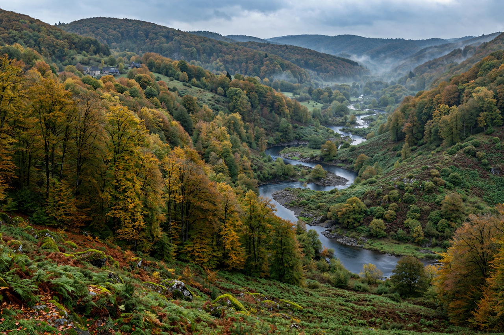

Ardennes

| Ardennes | |
| Countries | Belgium, Luxembourg, France, Germany (Eifel continuation) |
|---|---|
| Highest point | Signal de Botrange, 694 m (Belgium) |
| Rivers | Meuse, Semois, Ourthe, Lesse |
| Character | Ancient upland of forested hills and deep river valleys |
The Ardennes (French: Ardenne) is a region of extensive forests, rough terrain, rolling hills and ridges in southeast Belgium, northeast France and Luxembourg, continuing into Germany as the Eifel. Geologically it is the western extension of the Rhenish Massif, an ancient upland whose rocks date from the Devonian and Carboniferous periods. The Meuse and its tributaries have cut deep, winding valleys through the plateau.
- Geography
- History
- The world wars
- Economy and culture
Geography
The region covers roughly 11,000 km². Its highest ground, in Belgium's Hautes Fagnes, reaches 694 m at the Signal de Botrange, the highest point in Belgium. The landscape is one of dense oak and spruce forest, peat bogs, slate villages and meandering rivers such as the Semois at Bouillon and the Meuse at Dinant. The French département of Ardennes takes its name from the region, as does the Belgian province of Luxembourg's wooded south.
History
The Celts knew the forest as Arduenna, sacred to the goddess Arduinna. Julius Caesar described Arduenna Silva as the greatest forest of Gaul. In the Middle Ages the region was a land of small lordships, castles such as Bouillon — home of Godfrey, a leader of the First Crusade — and charcoal-burning, ironworking and slate quarrying in its valleys. Shakespeare set much of As You Like It in a Forest of Arden indebted to the Ardennes of his sources.
The world wars
The Ardennes' terrain shaped twentieth-century warfare. In August 1914 French and German armies clashed in the Battle of the Ardennes. In May 1940 the main German armoured thrust of the invasion of France passed through the supposedly impassable Ardennes, breaking through at Sedan on the Meuse and deciding the Battle of France. In December 1944 the region saw Germany's last major offensive in the west, the Battle of the Bulge (Ardennes Offensive), fought in bitter winter weather around Bastogne and St. Vith.
Economy and culture
Historically the Ardennes supported forestry, iron and steel (in its French and Luxembourg fringes), slate and agriculture; today tourism — hiking, cycling, kayaking, and the Ardennes classics cycle races such as Liège–Bastogne–Liège and La Flèche Wallonne — is central. The region is known in gastronomy for Ardennes ham and game, and in cycling for the steep "murs" climbed by its races.
See also: Sedan; Battle of the Bulge; Blitzkrieg; Eifel.